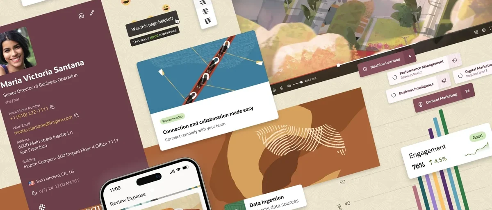

Guideline: building high-quality AI responses
I wrote the guideline that defines what a good AI response looks like at Oracle, then converted it into prompt instructions so teams could enforce it instead of just reading it.

The problem
Dozens of teams shipped LLM features at once, each writing its own prompts and each landing on a different idea of “good.” One assistant hedged everything, another was curt, a third answered in bulleted walls. Customers saw one product with an inconsistent personality, and teams debugged tone and structure one prompt at a time.
The solution
I proposed, wrote and owned the guideline, with input from design, content, engineering and the teams closest to customer feedback.
The guideline
A published standard for what a good response is: grounded, relevant, well structured, on voice, safe, and coherent across turns.
Prompt engineering guidance
Before-and-after examples of how prompt patterns change agent output, for the PMs and designers who write prompts.
Reusable prompt blocks
Each section of the guideline as a block to paste into a system prompt. Adopt the whole standard or only the pieces.
Impact
- Adopted as the reference standard for AI response quality.
- The prompt blocks seeded the always-on skills later shipped in AI Agent Studio.
- Published externally, so customers building their own agents inherit the same bar.
What I learned
A guideline is a product. It needs a user, a job to be done, and a form that fits the moment of use. Writing the document was a third of the work. Making it easy to copy and paste was the rest.
Published by Oracle
- Building AI interactions Oracle Redwood